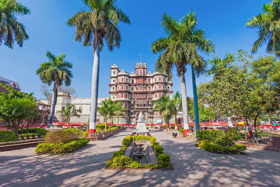

april25, 2020
indore;is my favorite city

lick here
Thanks to the rich black soil of the Malwa Plateau, Indore has prospered into being the fourth largest centre of cotton textile industry in India. It is also justly famous for its beautiful bangles. Indore can be called the 'food city'. It has great variety and taste in food.
ndore is a city in west-central India. It’s known for the 7-story Rajwada Palace and the Lal Baag Palace, which date back to Indore’s 19th-century Holkar dynasty. The Holkar rulers are honored by a cluster of tombs and cenotaphs at Chhatri Baag. The night market Sarafa Bazar sells street food. East is the Indo-Gothic Gandhi Hall and clock tower. The Jain temple Kanch Mandir has a mirrored mosaic interior.